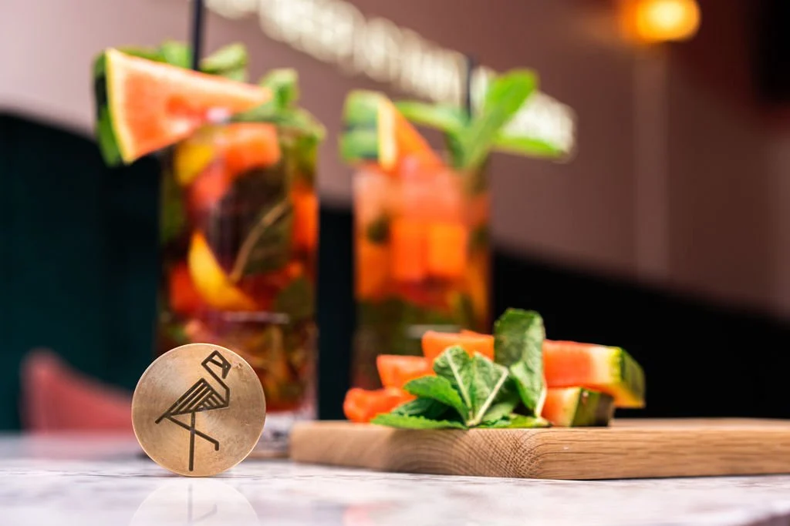
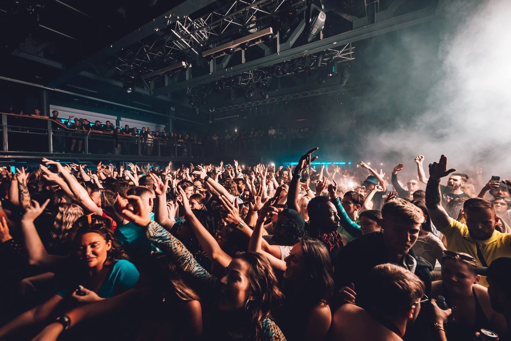
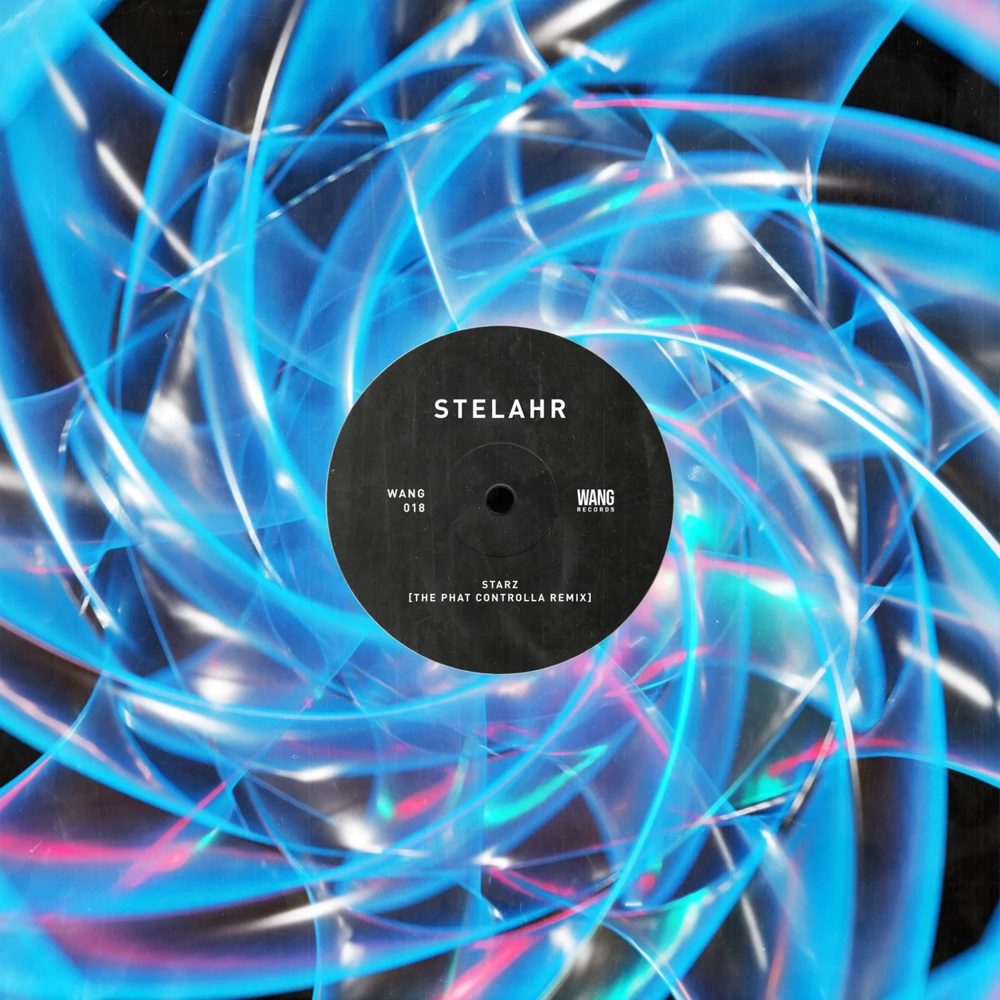

Work
Client projects, brands I've built, and earlier events and venues.
Client work
 Client
Client Client
ClientBrands I've built

Brand I builtAudrey
Booked out three months before opening. A bar I co-founded.
 Brand I built
Brand I builtDoppler
A home for underground music, radio and creative community.
 Brand I built
Brand I builtDaal & Bass
South Asian music and culture, from record releases to supermarket sets.

Brand I builtBeastwang
Independent dance music culture, built from the ground up.

Brand I builtWang Records
An independent label taking UK club culture beyond the dancefloor.